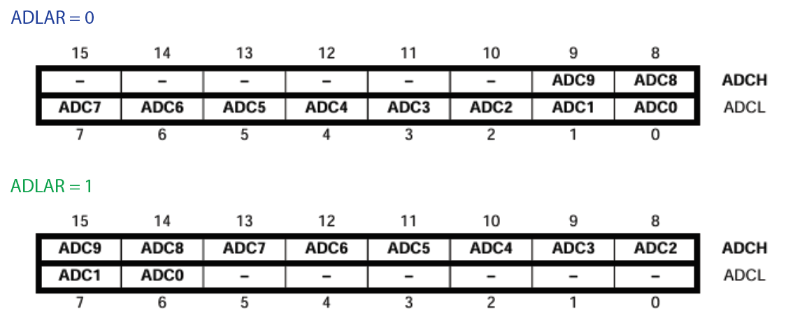

5. ADC - Analog Digital Converter
5.1 Aufgabe / Herausforderung
Eine Analoge Spannung soll in einen digitalen Wert umgewandelt werden um vom Mikrocontroller weiter bearbeitet zu werden. Beispiel Voltmeter, Auslesen eines analogen Sensorwertes, ...
Die Herausforderung ist dabei, dass...
- der Messfehler möglichst klein sein soll
- eine entsprechend geeignete Auflösung für die Messaufgabe verwendet wird
5.2 Messverfahren
Es gibt verschiedene Verfahren, um analoge Signale in digitale umzuwandeln, z.B. Flash Wandler, Pipeline Wandler, Sigma-Delta Wandler, Slope Wandler und SAR-Wandler.
Ein Vergleich der verschiedenen Typen und deren bevorzugte Anwendung findest sich z.B. hier.
Beim ATmega16 wird die sukzessive Approximation (SAR-Wandler) verwendet sodass der Fokus auf diesem Wandler ist.
Sample & Hold Schaltung
Hält die zu messende Spannung für die Zeit der Wandlung konstant.
Komperator
"Am Ausgang des Komparators steht ein Signal zur Verfügung, das anzeigt, welche der beiden Eingangsspannungen höher ist. Wenn die Spannung am positiven, nicht-invertierenden Eingang höher ist als die Spannung am negativen, invertierenden Eingang, so nähert sich die Ausgangsspannung der positiven Versorgungsspannung. Bei umgekehrten Verhältnissen geht die Ausgangsspannung gegen die negative Versorgungsspannung." (Wikipedia)

5.3 ATmega16 ADC
5.3.1 Kenngrößen
Ein paar Kenngrößen des ADC im ATmega16:
- max. 10-bit Auflösung (d.h. 1024 Schritte)
- +/- 2 LSB Absolute Accuracy
- 13-260us Conversion Time
- bis zu 15 kSPS bei maximaler Auflösung
- 8 multiplexed single ended input channels
- 7 differential input channels
- 2 differential input channels mit optionaler Verstärung von 10x oder 200x
- 0-Vcc ADC Input Voltage Range
- Auswählbare 2.56V ADC Referenz Spannung
- ...
5.3.2 Blockschaltbild
5.3.3 Referenzspannung
Ein ADC vergleicht die Messspannung mit einer Referenzspannung. Deshalb kommt der Stabilität der Referenzspannung eine große Bedeutung zu!
Es kann zwischen unterschiedlichen Referenzspannungen gewählt werden (Register ADMUX Bits REFS1 und REFS0):
- VAcc
- Interne 2.56V Referenz Spannung
- Externe Spannung an Pin AREF
Der Wert der Wandlung (bzw. durch Umstellung der Wert der zu messenden Spannung) berechnet sich mit den folgenden Formeln:
| Parameter | Bedeutung |
|---|---|
| n | Bitbreite (für ATmega16 -> 10) |
| ADC | Wert der Wandlung |
| Vin | Spannung am Eingang des ADC |
| Vref | Referenzspannung |
5.3.4 Prescaling
Ein sukzessiver Appriximation Wandler benötigt eine Taktfrequenz zwischen 50kHz und 200kHz um die maximale Auflösung zu erhalten. Sollten weniger als 10 bit Auflösung ausreichen, kann die Taktfrequenz über 200 kHz liegen um einer höhere Abtastrate zu erhalten.
Eine normale Wandlung benötigt 13 ADC Taktzyklen. Die erste Wandlung benötigt 25 Taktzyklen um auch die analoge Schaltung im Mikrocontorller zu initialisieren.
5.3.4 Multiplexer
Es ist nur ein ADC vorhanden, jedoch 8 ADC-Eingänge. Der Multiplexer ermöglicht die Auswahl des ADC Pins (single ended) bzw. der ADC Pins (differential) sowie GND und einer Bandabstandsreferenz (Bandgap reference, 1.23VDC beim ATmega16).
5.3.5 ADC Register
ADMUX - ADC Multiplexer Selection Register
ADCSRA - ADC Control and Status Register A
SFIOR - Special Function IO Register
ADC Data Register - ADCL und ADCH

Anmerkung: Grundsätzlich wird erst das Low-Byte ausgelesen, danach das High-Byte. Erst wenn auch das High-Byte ausgelesen ist, kann ein neuer Wert in das Register geschrieben wird. Beim GCC gibt es 16-Bit PseudoRegister (ADC), bei diesen wird die Zugriffsreihenfolge durch den Compiler automatisch geregelt.
Reicht z.B. eine 8-bit Auflösung des zu messenden Signals, kann man z.B. nur ADCL auslesen.
5.3.6 Modi
Über ADC Auto Trigger Source im Register SFIOR können verschiedene Modi gewählt werden. Diese werden hier kurz vorgestellt:
Single Conversion
Hier wird das ADSC (ADC Start Converstion) Bit manuell gesetzt. Das Bit bleibt solange gesetzt bis die Wandlung beendet ist. Ein Wechsel des Eingangkanals über den Multiplexer wird erst durchgeführt, wenn die Wandlung beendet ist.
Free Running mode
Der ADC führt kontinuierlich Wandlungen durch. Die erste Wandlung muss manuell gestartet werden (setzen des ADSC Bit in ADCSRA).
Analog Comparator
Der Analog Comparator vergleicht die Eingangswerte am positiven Pin AIN0 and negativen Pin AIN1. Wenn die Spannung am positiven Pin AIN0 größer ist als am negativen Pin AIN1, wird der Analog Comparator Output ACO gesetzt.
Verschiedene Interrupt (ohne Analog Comparator)
Durch setzen der ADC Trigger Select Bits und einschalten des ADC Auto Trigger Enable wird die Wandlung beim Trigger Signal durchgeführt. So können z.B. Wandlungen im festen Takt durchgeführt werden. Nach der Wandlung muss die Interrupt Flag gelöscht werden bevor eine neue Wandlung gemacht wird.
5.3.7 Unterschied single ended/differential input
Single ended input
Beim single ended input wird eine Spannung gegen den gemeinsamen GND (des Mikrocontrollers) gemessen.
Typische Anwendungsszenarien sind z.B.:
- Potentiometer um einen Winkel oder Position zu messen
- Messung von Lichtstärke
- Messung von Distanzen mittels Infrarot/Ultraschall
- Messung von Gas- und Luftqualität
| Vorteile | Nachteile |
|---|---|
| Kostengünstig | Empfindlich ggbr. Störungen auf dem analogen Signalweg |
| Nur ein Input-Pin des uC nötig | Empfindlich ggbr. Gleichtaktstörung |
| Einfach | Ggfs. höherer Schaltungsaufwand |
Übungsbeispiel ADC01 (single ended input)
Es soll die über ein Potentiometer veränderbare Spannung der MEGACARD eingelesen werden und auf dem Display ausgegeben werden (Achtung: Jumper X14 setzen!). Dabei ist der Spannungsbereich ca. von 0V bis 4.76V (d.h. von 0 bis Vcc, die 4.76V sind ein gemessener Wert).
Ablauf:
- Initialisieren des ADC für ADC5
- Setzen Spannungs-Referenz von AVcc
- Setzen des Prescalers zu 128
- Messung starten und Ergebnis abwarten
- Berechnen der Spannung und Ausgeben des Ergebnisses auf dem Display
main.c
#include <avr/io.h>
#include <util/delay.h>
#include "display.h"
void init (void)
{
// Grundinitialisierungen
ADMUX |= (1<<REFS0) | (1<<MUX2) | (1<<MUX0); // Sets AVcc as reference, and selects ADC5
ADCSRA |= (1<<ADEN) | (1<<ADPS2) | (1<<ADPS1) | (1<<ADPS0); // Enable ADC and set prescaler to 128
}
int read_ADC5(){
ADCSRA |= (1 << ADSC); // Manually start new measurement
while (ADCSRA & (1<<ADSC)); // Wait until ADSC bit is cleared -> conversion complete
return (ADC); // Return 16-bit value containing both high and low byte
}
int main (void)
{
init (); // Aufruf der Grundinitialisierungen
display_init(); // Initialisierung der Anzeige
int out;
float result;
out = 0;
while (1)
{
// Hauptschleife
out = read_ADC5();
result = (out / 1024.0) * 4.75;
display_printf_pos (0, 4, "Output: %.3f", result);
_delay_ms(500); // delay 500
}
return 0;
}
Übungsbeispiel ADC02 (Wandlung bei Interrupt)
Ergänzen Sie das obige Beispiel so, dass die Messung jeweils exakt alle zwei Sekunden durchgeführt wird.
Differential input
Hat jetzt ein Signal z.B. einen Wertebereich zwischen 2 und 3 V so würde beim single ended input Auflösung verloren gehen (weil die 10bit Auflösung für den kompletten Bereich von 0-3 V angewendet werden).
| Vorteile | Nachteile |
|---|---|
| Unterdrückt Rauschen im Signal | Benötigt zwei Pins pro Sensor |
| Auch für sehr kleine Signale geeignet | Komplexer |
Verwendet man hier nun einen differential input gemäß unten dargestellter Schaltung, kann für das gemessene Signal (hier +/- 0.5V) die volle Auflösung verwendet werden.
Weiterführende Dokumentation zu den beiden Varianten findet sich z.B. hier.
5.3.8 Genauigkeit und Fehler
Steht im Datenblatt :)
5.3.9 Elektrische Eigenschaften (ADC)
Zu beachtende elektrische Grenzen finden sich in Tabelle 122 (ADC Characteristics) des ATmega16 Datenblatt.
Eine Auswahl ist hier wiedergegeben:
| Symbol | Parameter | Min | Typ | Max | Units |
|---|---|---|---|---|---|
| AVcc | Analog Supply Voltage | Vcc-0.3 (2.7V) | Vcc+0.3 (5.5) | V | |
| Vref | Reference Voltage - Single Ended | 2.0 | AVcc | V | |
| Vref | Reference Voltage - Differential | 2.0 | AVcc - 0.2 | V | |
| Vin | Input Voltage - Single Ended | GND | Vref | V | |
| Vin | Input Voltage - Differential | 0 | Vref | V | |
| RAin | Analog Input Voltage | 100 | MOhm |